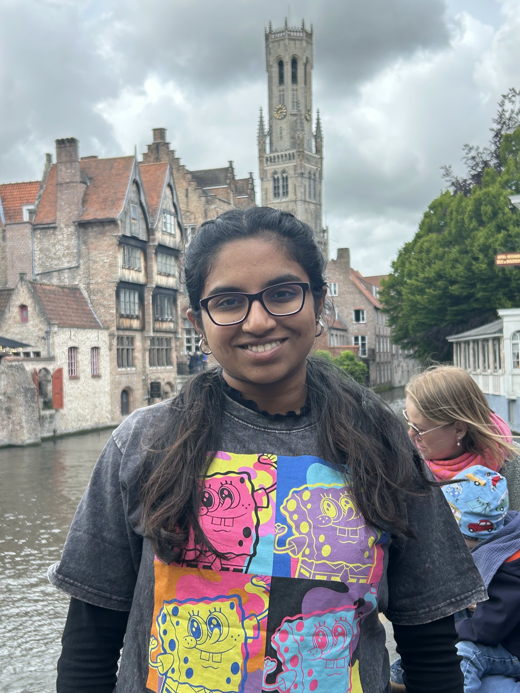
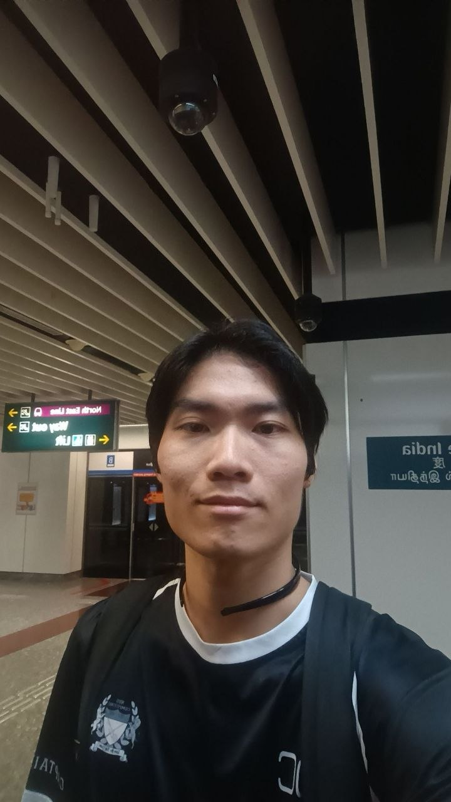

Neha Rajan
Engineering Science+Innovation & Design
CDE4301 Innovation & Design Capstone · Team IS-432 · PARKROYAL club-lounge case setting
How might we enable luxury-hotel staff to capture, share, and access relevant guest information seamlessly, so that they can deliver consistent, personalised, high-quality service?
Our Semester 1 work focuses on a proof of concept for the club-lounge food-and-drink service context. The intent is to make emerging same-stay preferences available at the next encounter, with appropriate staff confirmation and control.

Engineering Science+Innovation & Design

Computer Engineering+Innovation & Design

Computer Engineering+Innovation & Design

Computer Engineering+Innovation & Design